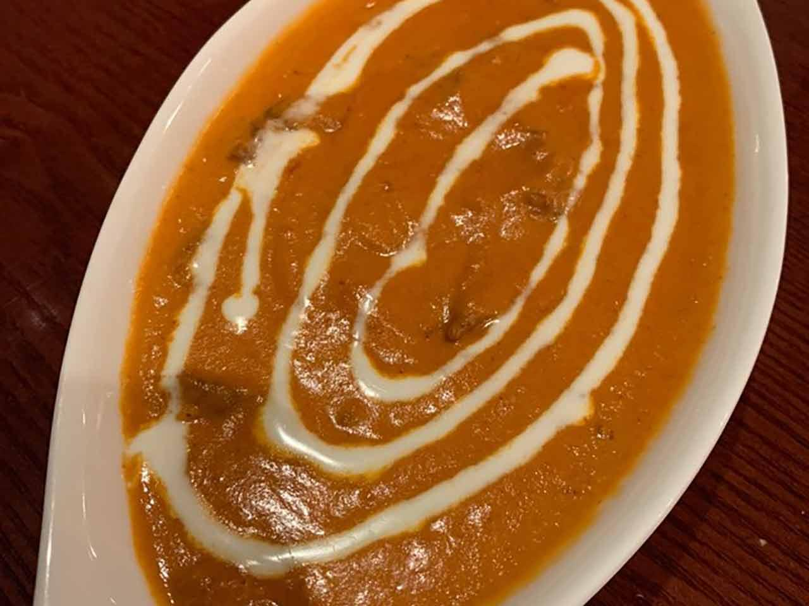
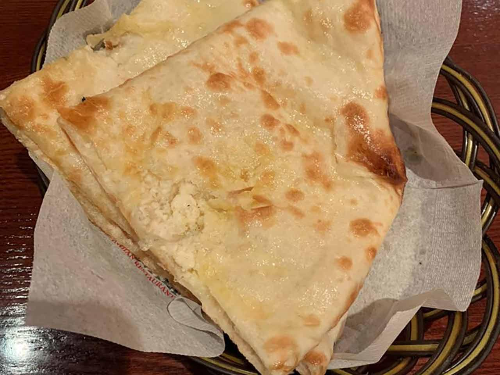
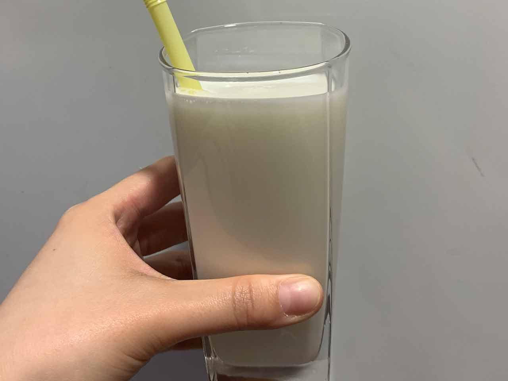
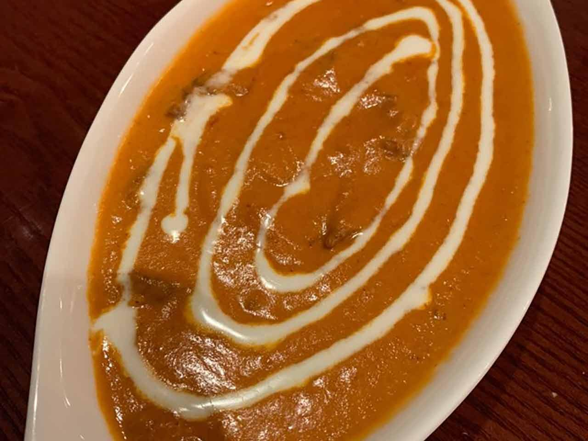
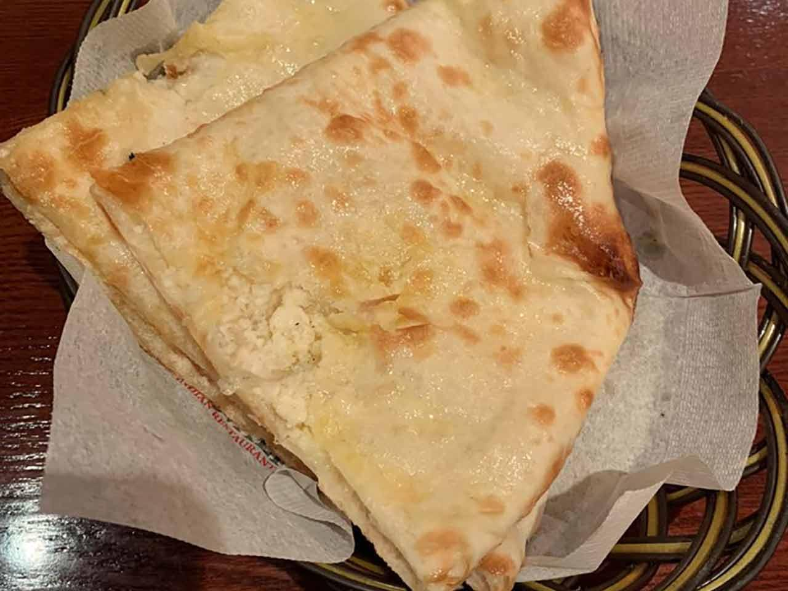
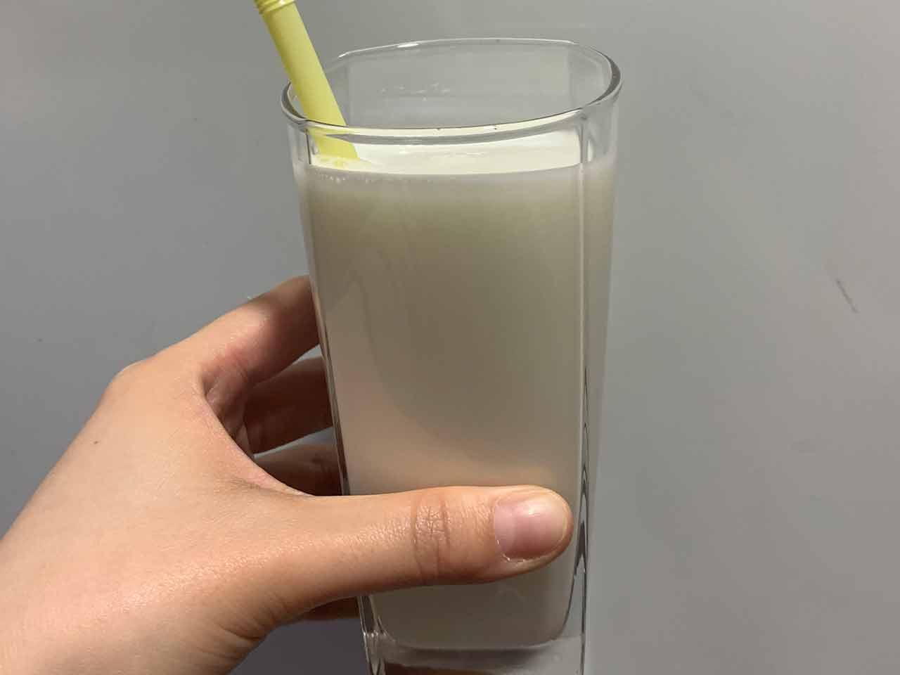

경기도 성남시 수정구 태평동 5113-9 경원프라자 2층 205호

|  |  |  | |
치킨마크니 |
파니르 난 |
탄두리 치킨 |
라씨 |
후기
치킨마크니를 비롯한 커리종류가 맛있다. 탄두리치킨은 잘 모르겠다
영업 시간
11:00 - 21:30
키워드
인도식커리, 가천대역2번출구
경기도 성남시 수정구 태평동 5113-9 경원프라자 2층 205호
|  |  |  | |
치킨마크니 |
파니르 난 |
탄두리 치킨 |
라씨 |
치킨마크니를 비롯한 커리종류가 맛있다. 탄두리치킨은 잘 모르겠다
11:00 - 21:30